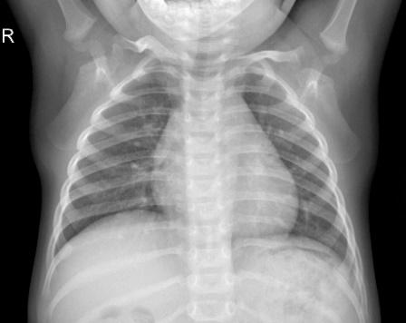
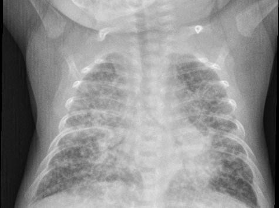
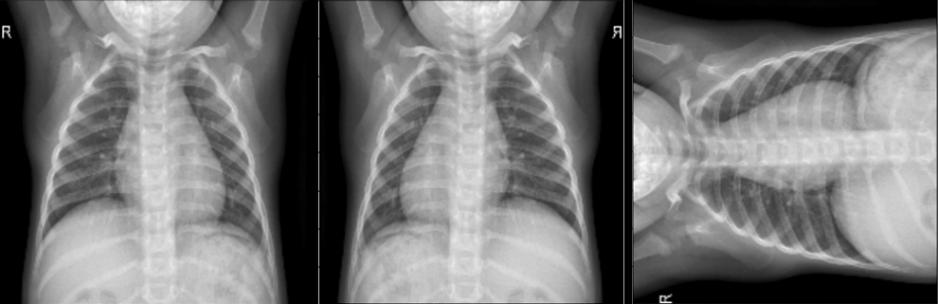
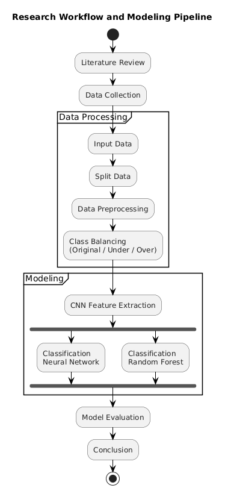
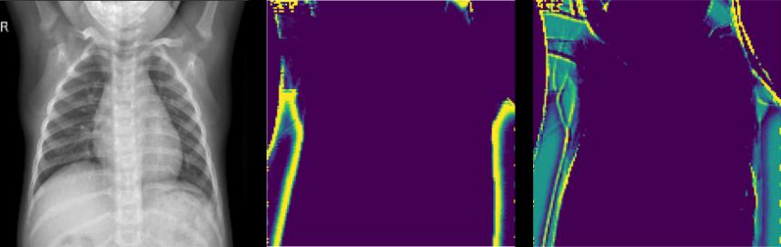
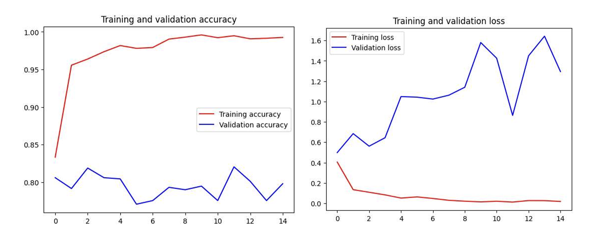

Automated Pneumonia Classification from Chest X-Ray Radiographs
Braincore Indonesia
IncoSST 2026
Background & Motivation
Research Gap
Dataset & Methodology
Experimental Setup
Results & Discussion
Conclusion & Future Work
Pneumonia — leading cause of child mortality under five in developing regions UNICEF (2019)
Chest X-ray is the most accessible screening modality, but manual interpretation suffers from inter-observer variability (Kundu et al. 2021)
CNN-based methods show strong performance but require high computational cost and are sensitive to class imbalance Ravi et al. (2017)
> Key question: Can we maintain CNN’s representation quality while drastically reducing training cost?
Existing approaches:
Pure deep models → high accuracy, high cost
Limited efficiency analysis across balancing strategies
Hybrid CNN–RF evidence lacks cross-setting evaluation
Our contribution:
Direct comparison: Baseline CNN vs. Hybrid CNN–RF
Three balancing settings evaluated
Joint performance + efficiency + calibration analysis
Two pipelines share the same CNN feature extractor:
Baseline CNN (DL-Based)
CNN → DNN head
Hybrid CNN (RF)
CNN → RF classifier
Core idea: decouple feature extraction from classification
Source: Kaggle pediatric chest X-ray
5,840 images total
5,216 train / 624 val
Binary: Normal vs. Pneumonia
Input: 200 \times 200 RGB
Binary target: Class 0 Normal, Class 1 Pneumonia


Representative pediatric chest X-ray samples for each class
Three training settings are compared throughout:
Original — preserves the natural class imbalance
Undersampled — reduces majority-class instances
Oversampled — augments minority-class images with geometric transforms
Each setting is evaluated on both pipelines, so the comparison isolates the effect of the classifier from the effect of balancing.

Geometric transforms — flipping and rotation — used to augment minority-class images in the oversampled setting

Data processing
Modeling
Shared CNN feature extraction
Two heads: DNN vs. Random Forest
Evaluation
CNN Feature Extractor (shared)
| Block | Filters | Kernel | Act. |
|---|---|---|---|
| 1 | 32 | 3 \times 3 | ReLU |
| 2 | 64 | 3 \times 3 | ReLU |
| 3 | 128 | 3 \times 3 | ReLU |
→ Pooling → Flatten → Feature vector

Example intermediate feature maps from the CNN backbone
Shared representation extracted once, then passed to different classifiers
Baseline: DNN Head
1 hidden layer (126 neurons)
2-neuron softmax output
Adam, lr = 0.001, 15 epochs
Hybrid: Random Forest
50 trees, seed = 42
Split: Entropy / Gini
Feature sampling: \sqrt{d}
Evaluation metrics:
Accuracy, Macro Recall/Precision/F1
ROC-AUC
Brier Score, ECE
Sensitivity at fixed Specificity
Protocol:
5 independent runs (different seeds)
McNemar’s test (p < 0.05)
Google Colab Pro (T4 GPU, High-RAM runtime)
| Dataset | Model | Acc. | F1 | AUC |
|---|---|---|---|---|
| Original | Baseline CNN | 73% | 64% | 0.91 |
| Original | Hybrid (RF-Gini) | 75% | 68% | 0.93 |
| Undersampled | Baseline CNN | 80% | 75% | 0.95 |
| Undersampled | Hybrid (RF-Gini) | 86% | 84% | 0.96 |
| Oversampled | Baseline CNN | 74% | 65% | 0.91 |
| Oversampled | Hybrid (RF-Gini) | 77% | 72% | 0.92 |
Best configuration: Hybrid CNN (RF-Gini) on undersampled data
Accuracy trend
Hybrid beats baseline in all three balancing settings
Largest gain appears on undersampled data
AUC remains consistently high across settings
Main interpretation
Better feature reuse with a simpler classifier
Stronger robustness under class imbalance
Best trade-off comes from undersampling + RF-Gini
| Dataset | Baseline CNN | Hybrid (Gini) | Speedup |
|---|---|---|---|
| Original (5216) | 47 min | 2 min | 24.6× |
| Undersampled (2682) | 23 min | 48 sec | 30.1× |
| Oversampled (7750) | 73 min | 3 min 20 sec | 24.2× |
Up to 30× faster training with improved metrics
Baseline CNN train/val loss:
| Setting | Tr. (E5) | Val. (E5) | Tr. (E15) | Val. (E15) |
|---|---|---|---|---|
| Original | 0.312 | 0.728 | 0.021 | 0.704 |
| Undersamp. | 0.284 | 0.543 | 0.012 | 0.531 |
| Oversamp. | 0.296 | 0.754 | 0.017 | 0.783 |
Observation:
Training loss → 0
Validation loss increases → overfitting
Worst in oversampled setting
→ Hybrid avoids this: RF fitted on fixed features, no gradient updates

Baseline CNN, undersampled setting — training accuracy saturates near 1.0 while validation accuracy plateaus, and validation loss climbs after mid-training
Multi-run stability (5 runs):
| Model | Accuracy | F1 | Specificity |
|---|---|---|---|
| Baseline | 79.4 ± 1.1 | 73.8 ± 1.5 | 83.2 ± 1.3 |
| Hybrid | 85.2 ± 0.8 | 83.1 ± 1.2 | 89.4 ± 1.1 |
McNemar’s test:
Original: p = 0.018
Undersampled: p = 0.003
Oversampled: p = 0.009
All p < 0.05 — statistically significant
| Model | Brier | ECE (%) | Sens. at 80% Spec. | Sens. at 90% Spec. | Sens. at 95% Spec. |
|---|---|---|---|---|---|
| Baseline CNN | 0.152 | 8.7 | 82 | 76 | 65 |
| Hybrid (RF-Gini) | 0.118 | 6.3 | 89 | 83 | 74 |
Better calibration → predicted probabilities more trustworthy
Higher sensitivity at high specificity → fewer missed pneumonia cases
Bias-Variance Perspective
DNN Head
High-variance estimator
Overfits on skewed features
Visible in train–val loss gap
Random Forest
50 decorrelated trees + bagging
Random feature selection per split
Reduces variance without increasing bias
Balanced data → reduces RF majority-class bias
Smaller dataset → faster training + fitting
CNN still receives diverse examples
Hybrid CNN–RF consistently outperforms Baseline CNN on all metrics
Up to 30× training speedup with +6 pp accuracy, +9 pp F1
Improvements are statistically significant (p < 0.05) and reproducible
Better probability calibration and sensitivity at clinical thresholds
Grad-CAM visualization for clinical interpretability
External validation on multi-institution datasets
Lightweight baselines (EfficientNet, MobileNet)
K-fold cross-validation
GA-based hyperparameter optimization (Fajri et al. 2025)
Thank You
Questions?